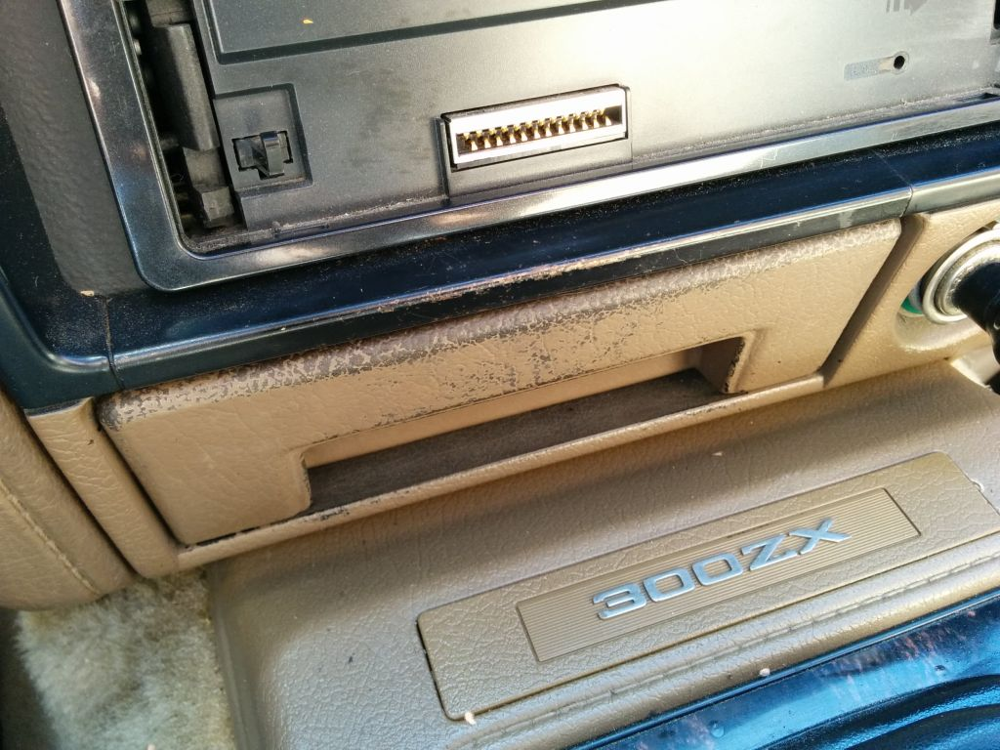
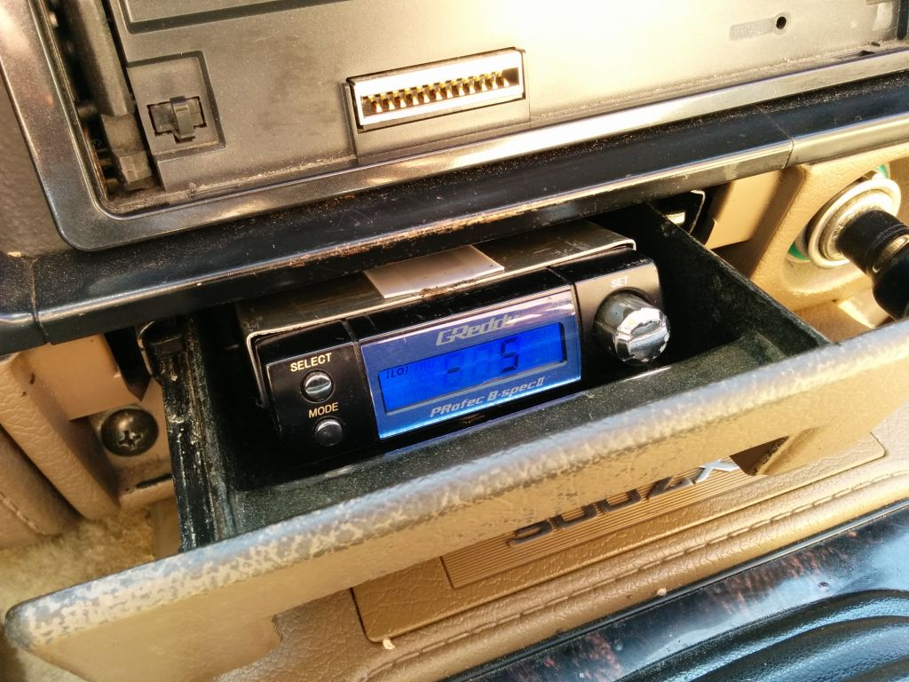
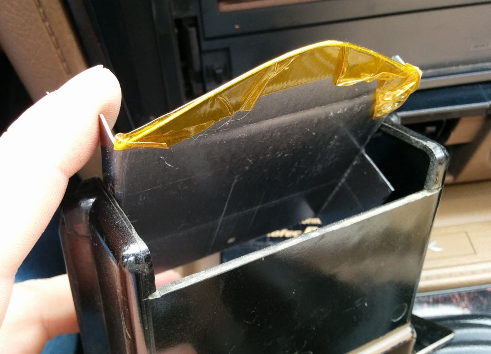
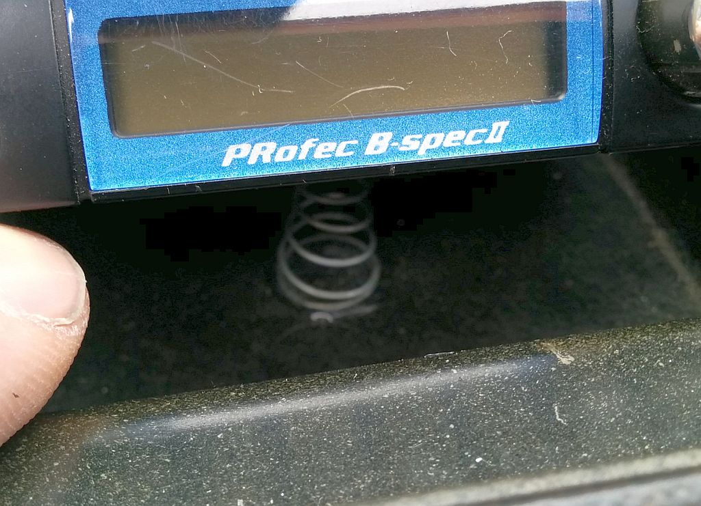
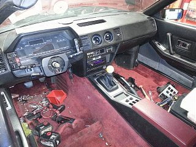

-
I made this a few years ago and it's gone through a few revisions before this.
Basically this allows you to stealth mount the boost controller in the ashtray,
whether for security or keeping the stock look. A few others have done this as well.
Tools:
Bench vise (or press brake if you have one)
Drill
Sheetmetal shears/snips
Dremel with cutoff wheel
Pliers
Epoxy
File
Supplies:
Sheetmetal 22ga
Metal rod (i used a bike spoke)
High temp tape
UHMW tape strip
This is pretty simple and straightforward to do so i won't document any step by step procedure.


Dremel out the rear of the ashtray for clearance. It's a type of bakelite material and cuts (and fractures) easily.

The UHMW (Ultra-high molecular weight) strip is a low friction material (think teflon) with an adhesive backing.
It's available on amazon and also called "slick tape" This is applied to the top of the tray you fabricated to hold
the controller. It allows the mechanism to freely slide against the metal underside of the ashtray mounting plate without gouging
metal on metal. This is what tucks the controller down as you close the tray.
The polymide tape is there to keep the rod in place and cover sharp edges. It's rated for high temp but aluminum HVAC tape
would work. Electrical tape is not recommended as it will soon become a gooey mess with exposure to summer temperatures.
The rod us shaped like a V because (iirc) if it were to go straight across from point to point, it interfered with the underside features
of the ashtray mounting plate.
The spring was purchased at ACE hardware and is fairly soft. It is held in place with epoxy.

I did it this way to keep from scraping the top of the controller on the underside of the ashtray mounting plate and for ease of removal (the controller is held in place just by the snug fitment of sides of the fabricated plate.
Last edited by Z_Karma; 06-29-2016, 05:43 PM.
84 AE/Shiro #683/Shiro #820/84 Turbo -
This should help newer folks since ZBUM(Paul) site is down at the moment. I did this on my 1st z31 back in the day. This mod will make you feel like 007 in no time lol.Originally posted by Racinjitter -
Does the pivot rod protrude into the side of the ashtray or how does it stay put?
Thanks for the write-up, it's a pretty nice and simple solution. -
Yes, there is a closed hole (not all the way through) in the inner wall of the ashtray that keeps it in place.Originally posted by kaur View Post
84 AE/Shiro #683/Shiro #820/84 Turbo -
I mounted mine sneakily between the radio and hvac control. double sideded tape attaches it to the radio. love it, and easy to see from my seat. plus it blends well overall.Damn dirty angels....these cars!
Current Daily Driver - 86 Turbo.
Under the cover - THE BANANA… that needs to be re-energized.
sigpic -
good job on your mounting and method though!
found a shot of mine!Damn dirty angels....these cars!
Current Daily Driver - 86 Turbo.
Under the cover - THE BANANA… that needs to be re-energized.
sigpic

Copyright © 2006–. All rights reserved. Privacy Policy